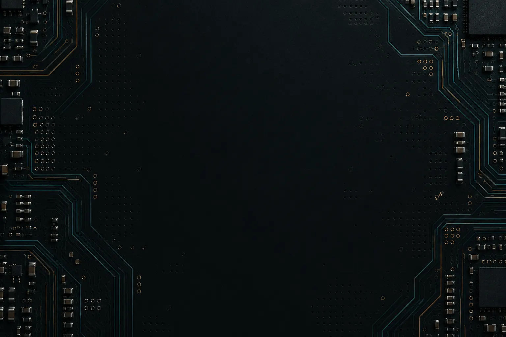
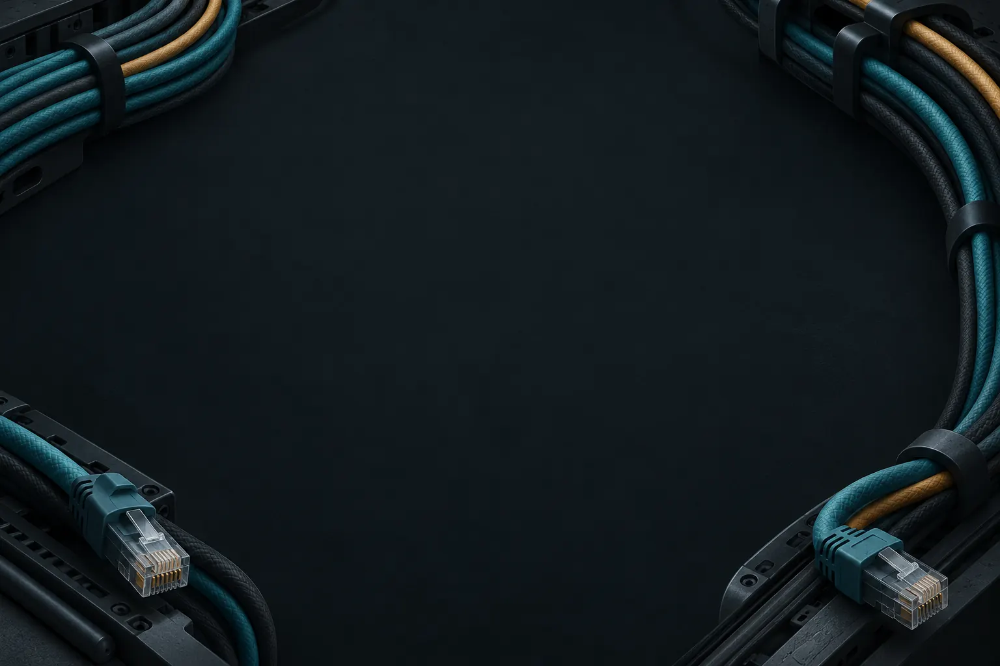
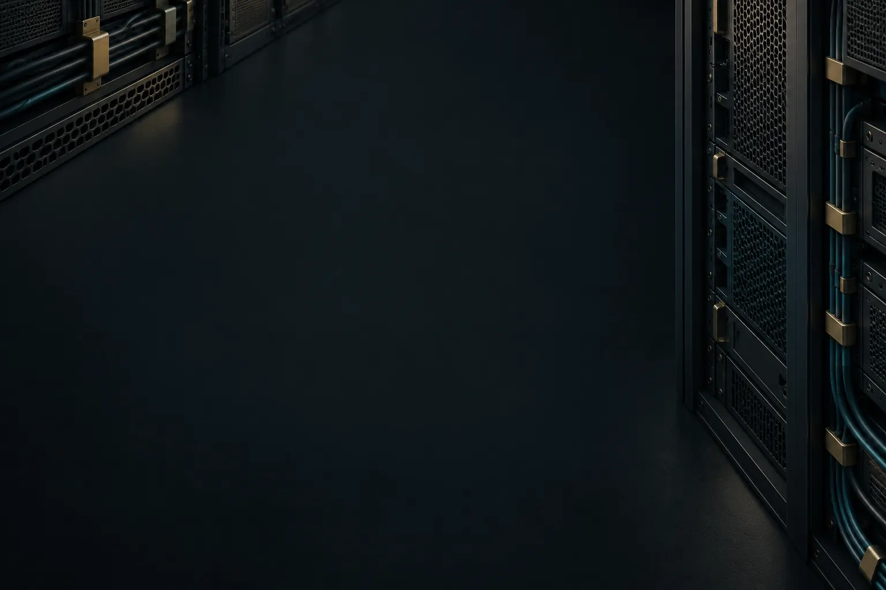

Ruhige IT-Hintergründe
Drei Motive für DAU TO PRO. Die Karten zeigen beispielhaft die Lesbarkeit; Lerninhalte sind hier nur eine Vorschau.
Einbauanleitung für Claude · Motivliste
Leiterplatte

DAU TO PRO · LERNMODULVerstehen. Üben. Weiterkommen.
Die Technik bildet den Rahmen. Aufgaben und Erklärungen bleiben klar lesbar im Mittelpunkt.
dtp-bg-circuit · Großes WebP · Kleines WebP
Netzwerkkabel

DAU TO PRO · LERNMODULVerstehen. Üben. Weiterkommen.
Die Technik bildet den Rahmen. Aufgaben und Erklärungen bleiben klar lesbar im Mittelpunkt.
dtp-bg-cables · Großes WebP · Kleines WebP
Servertechnik

DAU TO PRO · LERNMODULVerstehen. Üben. Weiterkommen.
Die Technik bildet den Rahmen. Aufgaben und Erklärungen bleiben klar lesbar im Mittelpunkt.
dtp-bg-server · Großes WebP · Kleines WebP